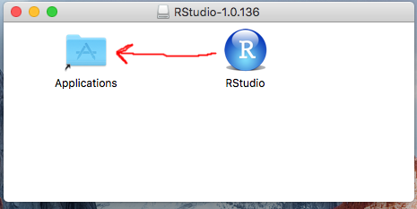
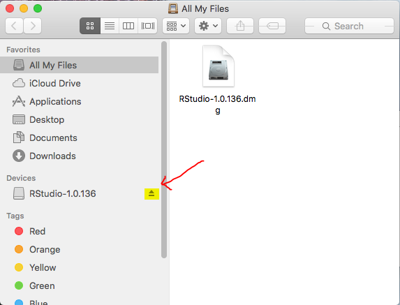
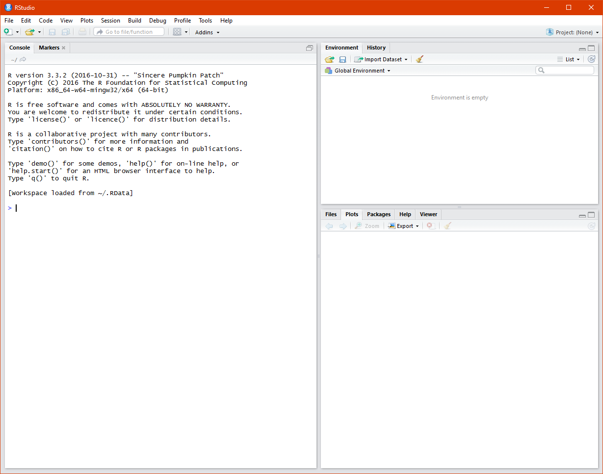
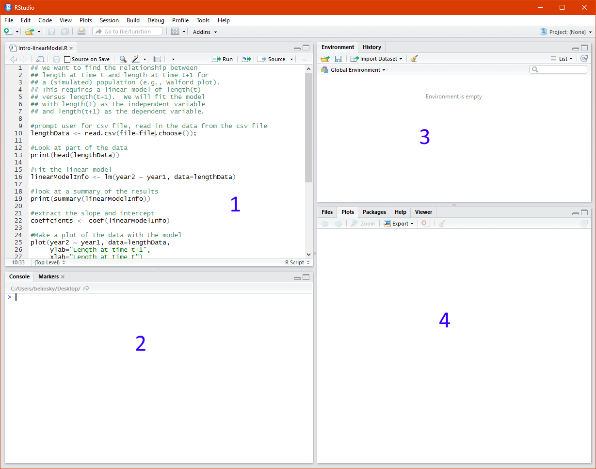
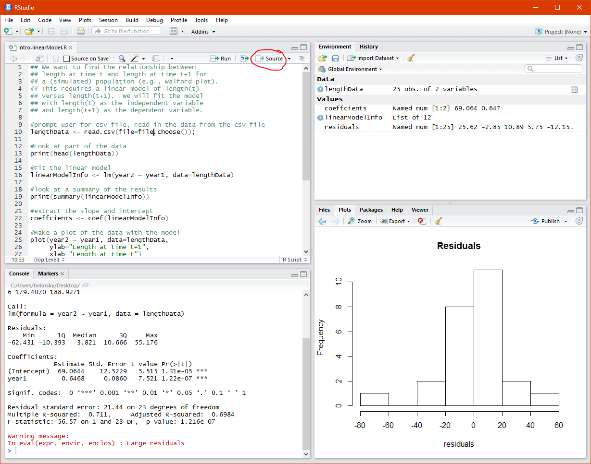
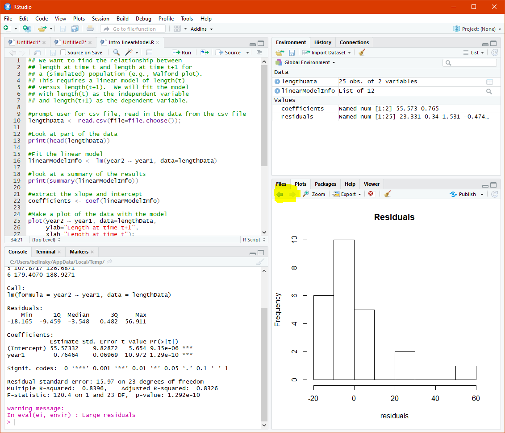
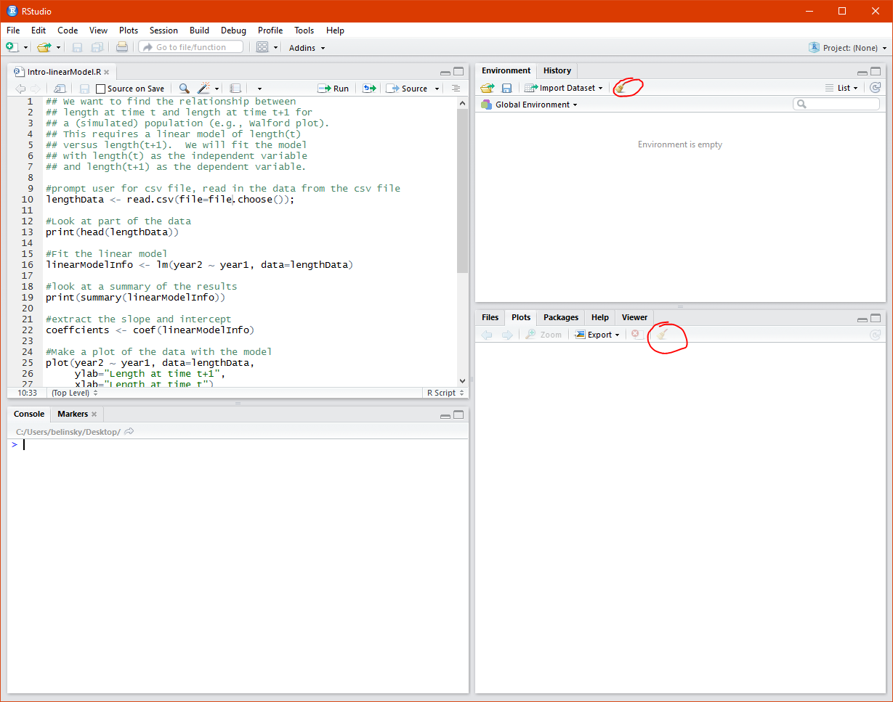
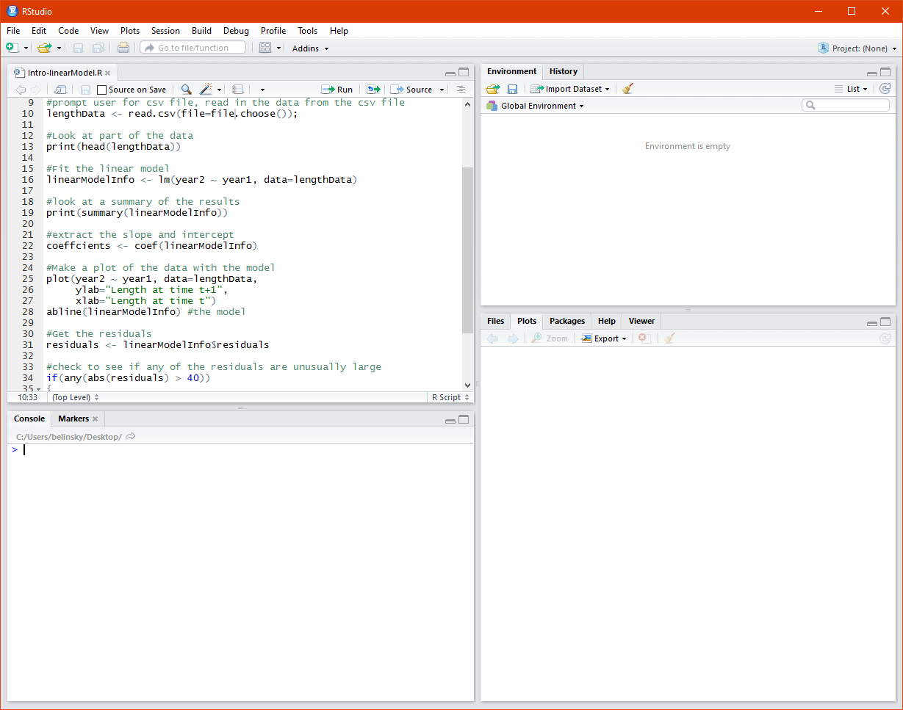
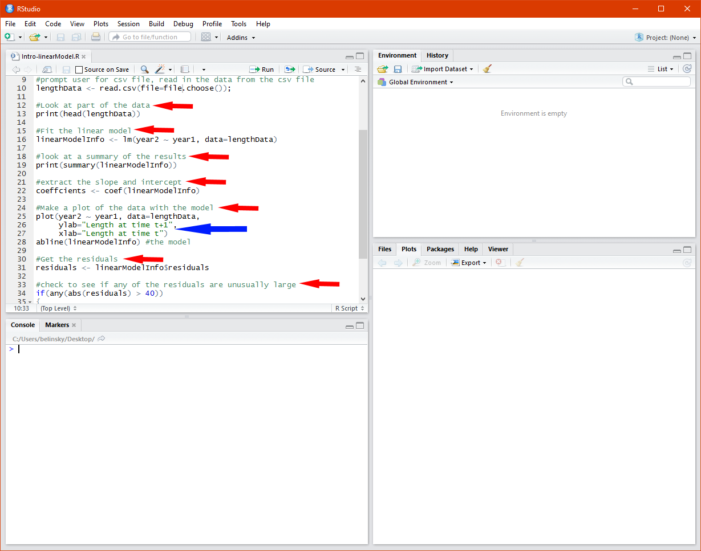
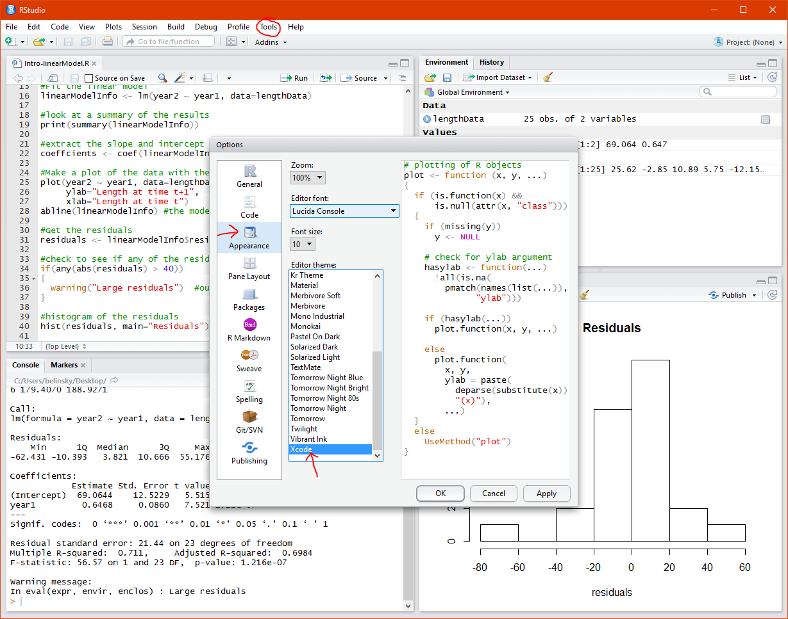

Previously: Introduction and Syllabus
Up Next: Variables
There are two programs you need to install for this class: R and RStudio. You will be creating scripts in R using RStudio. R is the programming language, RStudio provides a structured environment for the R programming language similar to the way Microsoft Word provides a structured environment for text editing. RStudio is patterned on other popular programming environments like Microsoft's Visual Studio.
First you need to install the desktop version of R.
The R for Windows download is here. Click on "Download R #.#.# for Windows".
The R for Mac download is here. Click on "R-#.#.#.pkg" on the left side of the page.
Open the file you downloaded and use the default installation options
And for those of you using Linux -- the R for Linux download instructions are here.
You can download the RStudio Installer here. Download the appropriate file for your computer under Installers, open the file, and use the default installation options.
For Mac users there are some extra complexities:


The picture below (Fig) shows RStudio when you first open it up and without a script file. This is a view you will rarely see because you will almost always have a script file opened.

We are going to execute a script that performs a linear regression on fish lengths over a two year period. The code in the script is something you will progressively learn throughout the course -- for now we are executing the script to help you become familiar with the RStudio environment.
You will need to download two files.
It does not matter where you save the two files as long as you remember where you put them (the desktop is always a convenient location to save files).
Note: You might need to resave the two files because browsers, for security reasons, will save downloaded files as read-only.
First you will open the R script file in RStudio. To do this you can either:
After opening the script file, you should see something that looks like this (Fig) on your screen...

The four windows in the picture above (Fig) are numbered:
Notes:
The script file you opened is a fully functioning program that takes fish data from a Comma Separated Value (CSV) file, Intro-linearModel.csv, and plots out the data -- the code will be explained later. I am going to use this program to demonstrate a few of the very useful buttons in RStudio.
The one button you will use the most is "Source". This is the button that execute your whole script. Extension: Run vs. Source
Press the Source button (Fig). The program asks you to locate the data file (csv) you just downloaded. Navigate the file browser to the csv file and click Open.

After the script is run:

There many times where you want to clean up the windows, which can get very crowded with old information.

If you click Source again, the Environment, Plot, and Console Windows will once again be populated with data from the script.
We are not going to spend any time on the R code itself in this lesson. But I want to focus on an important feature of all programming languages called commenting. Comments are text in a script that do not get executed -- the text is there to explain to the reader what is happening in the script. In other words, it allows programmers to explain their code within the script file. Notice how the functionality of the script can be generally understood just by reading the comments -- this is the main purpose of commenting.
In the R language, comments are created using the number-sign ( # ) key. Any text on the line after the ( # ) will be treated by R as a comment and it will not be executed. You are required to make extensive use of comments for your project in this class. Aside from being a good practice, it significantly reduces the frustration level of people who are trying to evaluate your work!
Notice how RStudio uses color to delineate comments (fig: lines 9,12,15,18,21, etc..). The comments below are in a lighter green whereas most of the other text is in black.

I am not a big fan of the default color scheme in RStudio. It does not create enough differentiation between the different components of a script. For instance, comments (red arrows) are in green and quoted items (blue arrows) are in just a slightly different green (Fig).

A good color scheme can really help a programmer by allowing them to quickly identify parts of a script and common errors, like misplaced quotes.
RStudio offers many color schemes: to change the color scheme (Fig)

The picture above shows the Xcode color scheme (Fig). I prefer Xcode because it does a good job differentiating the different aspects of the script. Notice how the comments (in green) are now clearly distinguished from the quotes (in red).
You can choose from around 20 themes in the Editor theme window and you can change the theme anytime without affecting anything else.
If you want to want to use the exact same color scheme that I use in the class, which is a slightly modified Xcode theme, follow the instructions in:
Extension: Customize Scheme
There are a couple more options you can set in RStudio that add more color variation in the Console Window. This is very helpful in the long run because it will help you distinguish the different types of output in the Console Window.
To make these changes go to Tools -> Code -> Display and check the following boxes:
Finally, a common complaint I have gotten from my students is they hate the way RStudio tries to be "helpful" by automatically adding end parenthesis and end quotes when the user types in a start parenthesis or start quote.
You can turn off this feature by going to Tools -> Code -> Editing and uncheck "Insert matching parens/quotes"

You might have noticed that the Xcode theme in (Fig) is slightly different than the Xcode theme on your computer. Specifically, the if, else, and warning statements are colored orange as opposed to purple. I did this to differentiate these statements from the output in the console. Unfortunately, this is not an easy thing to change in RStudio.
If you would like to use my color scheme, which is the color scheme I will use for the whole class, then you need to:
Note: the downloaded filename is DA6683C1A9EFEF24EAE992398513B1C4.cache.css and the name cannot change.
On a Windows computer (you need to be logged on as an admin of the computer):

On a Mac (you need to be logged on as an admin of the computer):
Restart RStudio and the color change will take effect -- you will see the added orange color in the code (like fig)
The Help Tab effectively acts as an online search through the R documentation. So, if you type in "plot" in the search bar and hit enter, the R plot help page from the online documentation will appear. Note: you could have done the same thing by typing "?plot" in the Console Window.

The page that appears in the Help Window (fig) is this page: https://stat.ethz.ch/R-manual/R-devel/library/graphics/html/plot.html
https://stat.ethz.ch is where the official documentation for R is located. So, you will see this website appear quite often when you do an internet search for something R related.
Technically speaking, the difference between Run and Source is:
The real difference lies in a historical discussion of scripting vs. programming, which is a discussion beyond this class. Suffice to say, R was originally intended to be a quick-and-dirty scripting language where users could immediately pull in data and produce a plot or perform statistical analysis. Using this method, an R-user would produce and execute one line of code at a time using the equivalent of the Run button.
As R has grown, the focus has shifted into developing well-structured code that can be easily shared, tweaked, and reused -- similar to a modern programming language like C. Using this method, an R-user would produce a full script and execute it all using the equivalent of the Source button. This is the method we will be using in this class.
RStudio is an open source project that is designed to provide a structured environment for R-users.